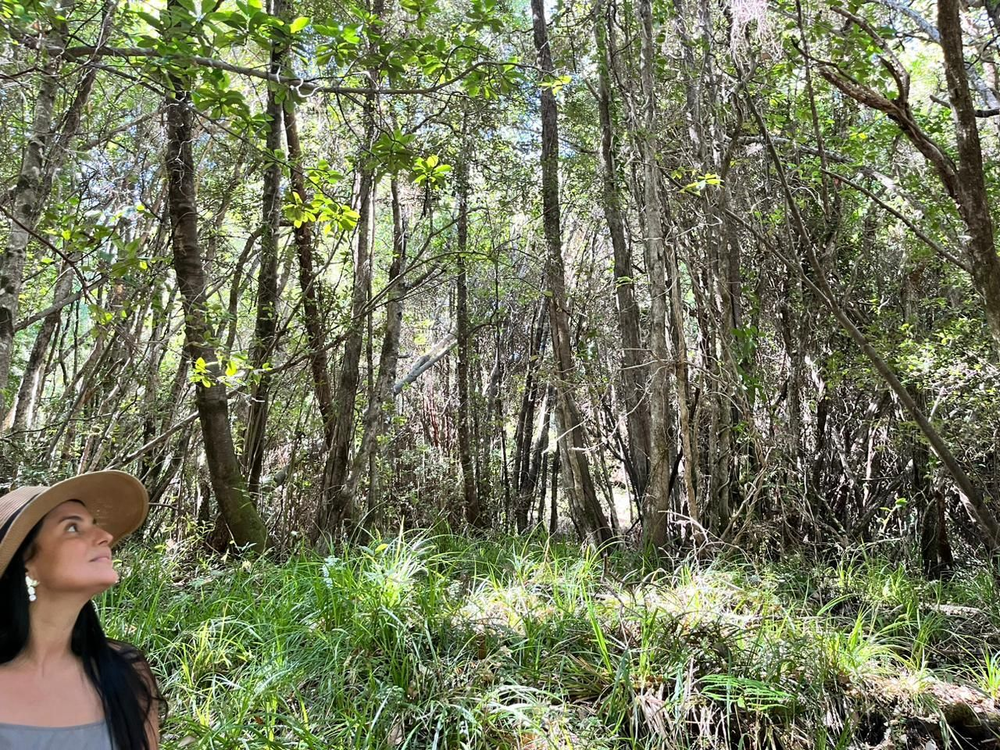
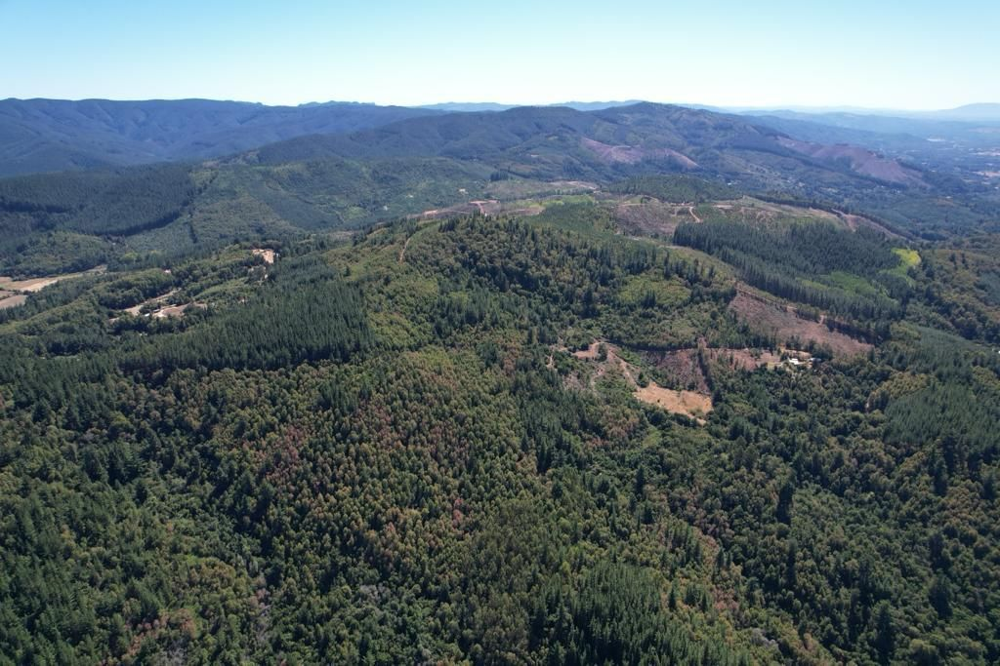
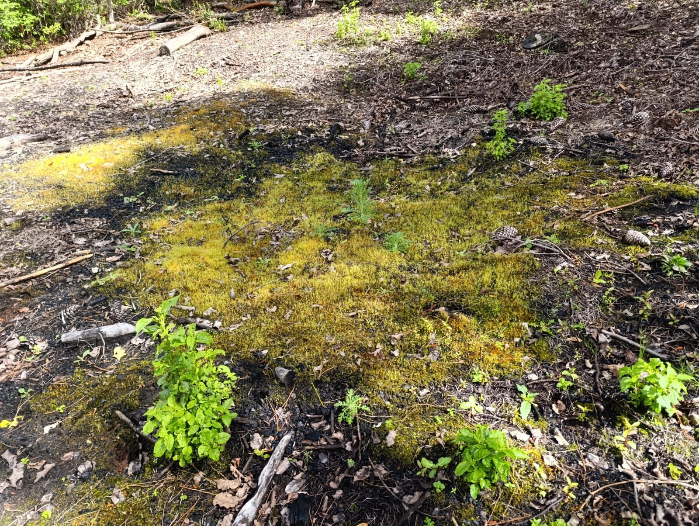
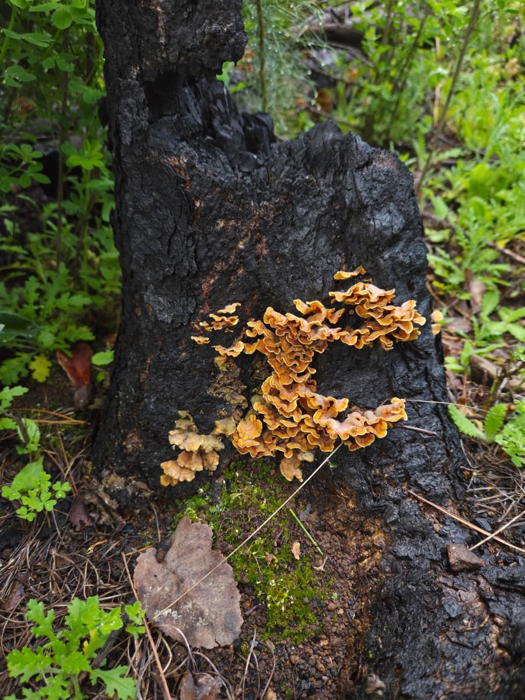
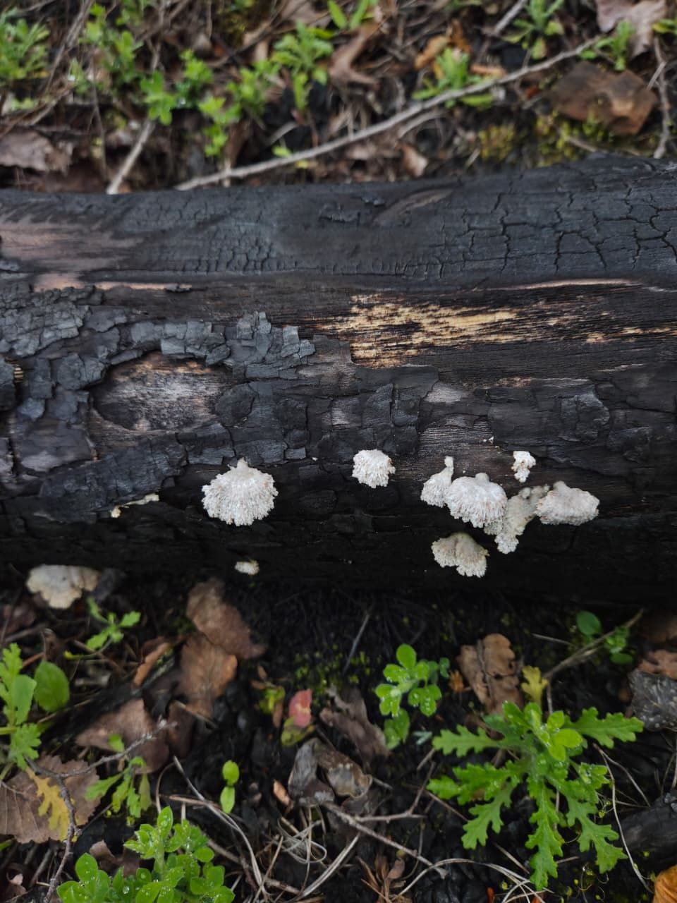
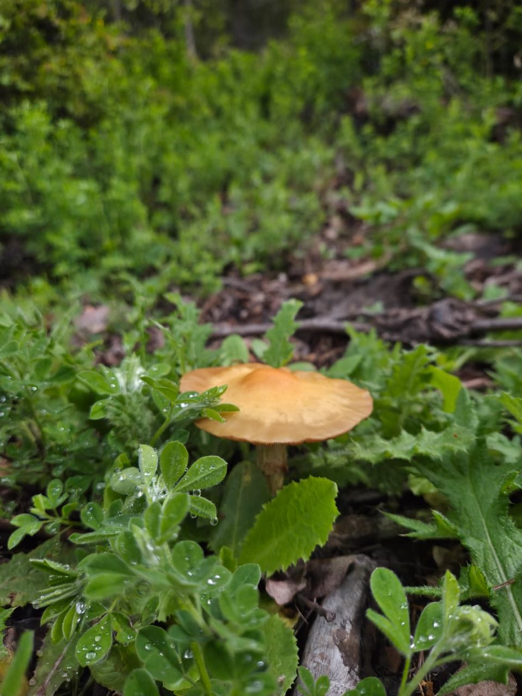
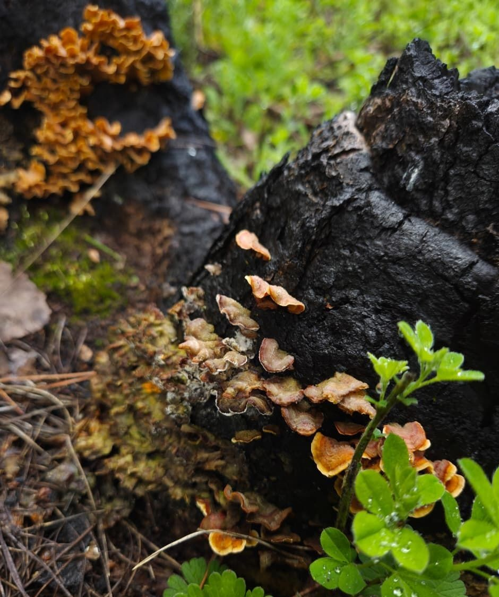

Un bosque en el límite
El bosque maulino es una formación relicta de la cordillera de la Costa de Chile central, entre los 35° y 37° de latitud sur, en el límite austral del clima mediterráneo. Lo componen árboles como el ruil (Nothofagus alessandrii), el hualo (N. glauca), el avellano (Gevuina avellana) y el peumo (Cryptocarya alba) (San Martín y Donoso 1996).

Pese a su pequeña extensión, alberga una gran diversidad y numerosas especies endémicas, y forma parte de uno de los puntos calientes de biodiversidad del planeta (Myers et al. 2000). El ruil, su especie más emblemática, está clasificado como En Peligro en la Lista Roja de la UICN.
Es uno de los bosques más amenazados de Chile. El ruil sobrevivía en apenas unas 314 hectáreas, y los incendios de 2017 quemaron más de la mitad de esa superficie (Valencia et al. 2018).
Fragmentado entre plantaciones
Como casi todos los ecosistemas naturales de Chile central, el bosque maulino está muy fragmentado. Sus parches sobreviven dentro de una matriz de plantaciones forestales de pino (Pinus radiata) y eucalipto (Eucalyptus globulus), cuya expansión explica gran parte de la pérdida de bosque de las últimas décadas (Echeverría et al. 2006), y menos del 0,5% de lo que queda está protegido por el Estado (Galleguillos et al. 2022).

Fuego e invasión
A esa presión se suman incendios cada vez más frecuentes e intensos, impulsados por el cambio climático y por el reemplazo de la vegetación nativa por especies exóticas inflamables (González et al. 2018). El bosque maulino había enfrentado incendios ocasionales, pero con tiempo suficiente entre uno y otro para recuperarse. Eso ya no ocurre.
Dos años después de los megaincendios de 2017, en los parches más quemados se contaban cerca de 7.000 plántulas de pino por hectárea, frente a unas 250 de ruil, que solo regeneraban donde el fuego había sido menos intenso (González et al. 2023). El riesgo es un ciclo en que el fuego favorece al pino y el pino favorece al fuego.
La recuperación empieza bajo tierra
Los hongos y bacterias del suelo ayudan a las plantas a obtener nutrientes y a establecerse. En ensayos preliminares de este proyecto, cuando el fuego los elimina, los árboles nativos pierden ese apoyo, mientras que el pino casi no lo nota. Conocer qué microorganismos persisten en los suelos quemados es una pieza para ayudar a que el bosque nativo vuelva.
Lo que vuelve a crecer
Estas fotos son de un sector de bosque nativo de la Reserva El Secreto de Pilén que se quemó hace menos de un año.





Referencias
- Bowman, D.M.J.S., Moreira-Muñoz, A., Kolden, C.A., et al. (2019). Human–environmental drivers and impacts of the globally extreme 2017 Chilean fires. Ambio, 48, 350–362.
- Echeverría, C., Coomes, D., Salas, J., Rey-Benayas, J.M., Lara, A. y Newton, A. (2006). Rapid deforestation and fragmentation of Chilean Temperate Forests. Biological Conservation, 130, 481–494.
- Galleguillos, M., Urrutia, R., Lara, A. y González, M.E. (2022, 5 de febrero). El inminente ocaso de los bosques maulinos. El Mostrador.
- González, M.E., Galleguillos, M., Lopatin, J., Leal, C., Becerra-Rodas, C., Lara, A. y San Martín, J. (2023). Surviving in a hostile landscape: Nothofagus alessandrii remnant forests threatened by mega-fires and exotic pine invasion in the coastal range of central Chile. Oryx, 57, 228–238.
- González, M.E., Gómez-González, S., Lara, A., Garreaud, R. y Díaz-Hormazábal, I. (2018). The 2010–2015 Megadrought and its influence on the fire regime in central and south-central Chile. Ecosphere, 9(8), e02300.
- Myers, N., Mittermeier, R.A., Mittermeier, C.G., da Fonseca, G.A.B. y Kent, J. (2000). Biodiversity hotspots for conservation priorities. Nature, 403, 853–858.
- San Martín, J. y Donoso, C. (1996). Estructura florística e impacto antrópico en el bosque Maulino de Chile. En J.J. Armesto, C. Villagrán y M.K. Arroyo (eds.), Ecología de los bosques nativos de Chile (pp. 153–168). Editorial Universitaria.
- Valencia, D., Saavedra, J., Brull, J. y Santelices, R. (2018). Severidad del daño causado por los incendios forestales en los bosques remanentes de Nothofagus alessandrii Espinosa en la región del Maule de Chile. Gayana Botánica, 75(1), 531–534.